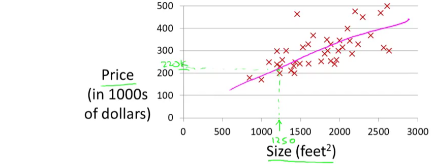

1 Linear Regression
1.1 Notation
In general, we will let \(x_{ij}\) represent the value of the \(j\)th variable for the \(i\)th observation, where \(i=1,2,\ldots,n\) and \(j=1,2,\ldots,p\). We will use \(i\) to index the samples or observations (from \(1\) to \(n\)) and \(j\) will be used to index the variables (or features) (from \(1\) to \(p\)). We let \(\textbf{X}\) denote a \(n \times p\) matrix whose \((i,j)\)th element is \(x_{ij}\). That is,
\[ \textbf{X} = \begin{pmatrix} x_{11} & x_{12} & x_{13} & \dots & x_{1p} \\ x_{21} & x_{22} & x_{23} & \dots & x_{2p} \\ \vdots & \vdots & \vdots & \ddots & \vdots \\ x_{n1} & x_{n2} & x_{n3} & \dots & x_{np} \end{pmatrix} \]
Note that it is useful to visualize \(\textbf{X}\) as a spreadsheet of numbers with \(n\) rows and \(p\) columns. We will write the rows of \(\textbf{X}\) as \(x_1 , x_2 , \ldots, x_n\). Here \(x_i\) is a vector of length \(p\), containing the \(p\) variable measurements for the \(i\)th observation. That is,
\[ x_i = \begin{pmatrix} x_{i1} \\ x_{i2} \\ \vdots \\ x_{ip} \end{pmatrix}\]
(Vectors are by default represented as columns.)
We will write the columns of \(\textbf{X}\) as \(\textbf{x}_1 , \textbf{x}_2, \ldots, \textbf{x}_p\). Each is a vector of length \(n\). That is,
\[ \textbf{x}_j = \begin{pmatrix} \textbf{x}_{1j} \\ \textbf{x}_{2j} \\ \vdots \\ \textbf{x}_{nj} \end{pmatrix}\]
Using this notation, the matrix \(\textbf{X}\) can be written as
\[ \textbf{X} = (\textbf{x}_1 \textbf{x}_2 \ldots \textbf{x}_p) \]
or
\[ \textbf{X} = \begin{pmatrix} x_{1}^T \\ x_{2}^T \\ \vdots \\ x_{n}^T \end{pmatrix}\]
The \(^T\) notation denotes the transpose of a matrix or vector.
We use \(y_i\) to denote the \(i\)th observation of the variable on which we wish to make predictions. We write the set of all \(n\) observations in vector form as
\[ \textbf{y} = \begin{pmatrix} y_{1} \\ y_{2} \\ \vdots \\ y_{n} \end{pmatrix}\]
Then the observed data consists of \(\{(x_1, y_1), (x_2 , y_2 ), \ldots , (x_n , y_n )\}\), where each \(x_i\) is a vector of length \(p\). (If \(p = 1\), then \(x_i\) is simply a scalar).
1.2 Model Representation
Let’s consider the example about predicting housing prices. We’re going to use this data set as an example,

Suppose that there is a person trying to sell a house of size 1250 square feet and he wants to know how much he might be able to sell the house for. One thing we could do is fit a model. Maybe fit a straight line to this data. Looks something like this,

and based on that, maybe he can sell the house for around $220,000. Recall that this is an example of a supervised learning algorithm. And it’s supervised learning because we’re given the “right answer” for each of our examples. More precisely, this is an example of a regression problem where the term regression refers to the fact that we are predicting a real-valued output namely the price.
More formally, in supervised learning, we have a data set and this data set is called a training set. So for housing prices example, we have a training set of different housing prices and our job is to learn from this data how to predict prices of the houses.
Let’s define some notation from this data set:
- The size of the house is the input variable.
- The house price is the output variable.
- The input variables are typically denoted using the variable symbol \(X\),
- The inputs go by different names, such as predictors, independent variables, features, or sometimes just variables.
- The output variable is often called the response, dependent variable or target, and is typically denoted using the symbol \(Y\).
- \((x_i,y_i)\) is the \(i\)th training example.
- The set of \(\{(x_i, y_i)\}\) is the training set.
- \(n\) is the number of training examples.
So here’s how this supervised learning algorithm works. Suppose that we observe a quantitative response \(Y\) and \(p\) different predictors, \(X_1 , X_2 ,\ldots, X_p\) . We assume that there is some relationship between \(Y\) and \(X = (X_1 , X_2 ,\ldots, X_p)\), which can be written in the very general form
\[Y = f(X) + \epsilon\]

Here \(f\) is some fixed but unknown function of \(X_1 , X_2 ,\ldots, X_p\) , and \(\epsilon\) is a random error term, which is independent of \(X\) and has mean zero. The \(f\) function is also called hypothesis in Machine Learning. In general, the function \(f\) may involve more than one input variable. In essence, Supervised Learning refers to a set of approaches for estimating \(f\).
1.3 Why Estimate \(f\) ?
There are two main reasons that we may wish to estimate \(f\): prediction and inference.
Prediction
In many situations, a set of inputs \(X\) are readily available, but the output \(Y\) cannot be easily obtained. In this setting, since the error term averages to zero, we can predict \(Y\) using
\[ \hat{Y} = \hat{f}(X) \]
where \(\hat{f}\) represents our estimate for \(f\), and \(\hat{Y}\) represents the resulting prediction for \(Y\). Like in the example above about predicting housing prices.
We can measure the accuracy of \(\hat{Y}\) by using a cost function. In the regression models, the most commonly-used measure is the mean squared error (MSE), given by
\[ MSE = \frac{1}{n} \sum_{i=1}^{n} (y_i - \hat{f}(x_i))^2\]
Inference
We are often interested in understanding the way that \(Y\) is affected as \(X_1 , X_2 ,\ldots, X_p\) change. In this situation we wish to estimate \(f\) , but our goal is not necessarily to make predictions for \(Y\). We instead want to understand the relationship between \(X\) and \(Y\), or more specifically, to understand how \(Y\) changes as a function of \(X_1 , X_2 ,\ldots, X_p\). In this case, one may be interested in answering the following questions:
- Which predictors are associated with the response?
- What is the relationship between the response and each predictor?
- Can the relationship between Y and each predictor be adequately summarized using a linear equation, or is the relationship more complicated?
1.4 Simple Linear Regression Model
Simple linear regression is a very straightforward approach for predicting a quantitative response \(Y\) on the basis of a single predictor variable \(X\). It assumes that there is approximately a linear relationship between \(X\) and \(Y\). Mathematically, we can write this linear relationship as
\[ Y = \beta_0 + \beta_1 X + \epsilon \] \[Y \approx \beta_0 + \beta_1 X\]
where \(\beta_0\) and \(\beta_1\) are two unknown constants that represent the intercept and slope, also known as coefficients or parameters, and \(\epsilon\) is the error term.
Given some estimates \(\hat{\beta_0}\) and \(\hat{\beta_1}\) for the model coefficients, we predict future inputs \(x\) using
\[\hat{y} = \hat{\beta_0} + \hat{\beta_1} x\]
where \(\hat{y}\) indicates a prediction of \(Y\) on the basis of \(X = x\). The hat symbol, \(\hat{}\), denotes an estimated value.
1.5 Estimating the Coefficients
Let \(\hat{y}_i = \hat{\beta_0} + \hat{\beta_1} x_i\) be the prediction for \(Y\) based on the \(i\)th value of \(X\). Then \(e_i = y_i - \hat{y}_i\) represents the \(i\)th residual.
We define the Residual Sum of Squares (RSS)1 as
\[ \begin{aligned} RSS &= e_1^2 + e_2^2 + \ldots + e_n^2 \\ &= \sum_{i=1}^{n} e_i^2 \end{aligned} \]
or equivantly as
\[ \begin{aligned} RSS &= (y_1 - \hat{\beta_0} - \hat{\beta_1} x_1)^2 + (y_2 - \hat{\beta_0} - \hat{\beta_1} x_2)^2 + \ldots + (y_n - \hat{\beta_0} - \hat{\beta_1} x_n)^2 \\ &= \sum_{i=1}^{n} (y_i - \hat{\beta_0} - \hat{\beta_1} x_i)^2 \end{aligned} \]
The least squares approach chooses \(\hat{\beta_0}\) and \(\hat{\beta_1}\) to minimize the RSS. The minimizing values can be shown to be2
\[ \begin{aligned} \hat{\beta_1} &= \frac{\sum_{i=1}^{n} (x_i - \bar{x})(y_i - \bar{y}) }{\sum_{i=1}^{n} (x_i - \bar{x})^2 } = \frac{s_{xy}}{s_x^2} = (s_x^2)^{-1} s_{xy} \\ \text{and} \\ \hat{\beta_0} &= \bar{y} - \hat{\beta_1} \bar{x} \end{aligned} \]
where:
- \(\bar{x}=\frac{1}{n}\sum_{i=1}^nx_i\) is the sample mean.
- \(s_x^2=\frac{1}{n}\sum_{i=1}^n(x_i-\bar{x})^2\) is the sample variance. The sample standard deviation is \(s_x=\sqrt{s_x^2}\).
- \(s_{xy}=\frac{1}{n}\sum_{i=1}^n(x_i-\bar{x})(y_i-\bar{y})\) is the sample covariance. It measures the degree of linear association between \(x_1,\ldots,x_n\) and \(y_1,\ldots,y_n\). Once scaled by \(s_xs_y\), it gives the sample correlation coefficient, \(r_{xy}=\frac{s_{xy}}{s_xs_y}\).
1- To find the optimal estimates for \(\beta_0\) and \(\beta_1\) we need a choice-criterion. In the case of the least squares approach (more precisely, the ordinary least squares OLS) this criterion is the residual sum of squares RSS: we calculate \(\beta_0\) and \(\beta_1\) that minimise the RSS.
2- Minimizing the RSS function requires to calculate the first order derivatives with respect to \(\beta_0\) and \(\beta_1\) and set them to zero.
3- Click here and watch the video to understand more about the residuals and least squares.
4- Click here to see the influence of the distance employed in the sum of squares. Try to minimize the sum of squares for the different datasets. The choices of intercept and slope that minimize the sum of squared distances for a kind of distance are not the optimal for a different kind of distance.
1.6 Assessing the Accuracy of the Coefficient Estimates
The standard error of an estimator reflects how it varies under repeated sampling. We have
\[ \text{SE}(\hat{\beta_1})^2 = \frac{\sigma^2}{\sum_{i=1}^{n} (x_i - \bar{x})^2} \]
\[ \text{SE}(\hat{\beta_0})^2 = \sigma^2 \bigg[ \frac{1}{n} + \frac{\bar{x}^2}{\sum_{i=1}^{n} (x_i - \bar{x})^2} \bigg] \]
where \(\sigma^2 = Var(\epsilon)\)
In general, \(\sigma^2\) is unknown, but can be estimated from the data. The estimate of \(\sigma\) is known as the residual standard error, and is given by
\[ \text{RSE} = \sqrt{\frac{\text{RSS}}{(n-2)}} \]
These standard errors can be used to compute confidence intervals. A \(95\%\) confidence interval is defined as a range of values such that with \(95\%\) probability, the range will contain the true unknown value of the parameter. It has the form
\[ \hat{\beta_1} \pm 2 \cdot \text{SE}(\hat{\beta_1}) \]
That is, there is approximately a \(95\%\) chance that the interval
\[ \bigg[ \hat{\beta_1} - 2 \cdot \text{SE}(\hat{\beta_1}), \hat{\beta_1} + 2 \cdot \text{SE}(\hat{\beta_1}) \bigg] \]
will contain the true value of \(\beta_1\). Similarly, a confidence interval for \(\beta_0\) approximately takes the form
\[ \hat{\beta_0} \pm 2 \cdot \text{SE}(\hat{\beta_0}) \]
Hypothesis testing
Standard errors can also be used to perform hypothesis tests on the coefficients. The most common hypothesis test involves testing the null hypothesis of
\[ H_0 : \text{There is no linear relationship between} \, X \, \text{and} \, Y \]
versus the alternative hypothesis
\[ H_1 : \text{There is some relationship between} \, X \, \text{and} \, Y \]
Mathematically, this corresponds to testing
\[ H_0 : \beta_1 = 0 \]
versus
\[ H_1 : \beta_1 \neq 0 \]
since if \(\beta_1 = 0\) then the simple linear regression model reduces to \(Y = \beta_0 + \epsilon\), and \(X\) is not associated with \(Y\)3.
To test the null hypothesis \(H_0\), we compute a t-statistic, given by
\[ t = \frac{\hat{\beta_1} - 0}{\text{SE}(\hat{\beta_1})} \]
This will have a \(t\)-distribution (Student) with \(n-2\) degrees of freedom, assuming \(\beta_1=0\).
Using statistical software, it is easy to compute the probability of observing any value equal to \(|t|\) or larger. We call this probability the p-value.
If p-value is small enough (typically under \(0.01\) (\(1\%\) error) or \(0.05\) (\(5\%\) error)) we reject the null hypothesis, that is we declare a relationship to exist between \(X\) and \(Y\).
1.7 ANOVA and model fit
1.7.1 ANOVA
In this section we will see how the variance of \(Y\) is decomposed into two parts, each one corresponding to the regression and to the error, respectively. This decomposition is called the ANalysis Of VAriance (ANOVA).
Before explaining ANOVA, it is important to recall an interesting result: the mean of the fitted values \(\hat Y_1,\ldots,\hat Y_n\) is the mean of \(Y_1,\ldots, Y_n\). This is easily seen if we plug-in the expression of \(\hat\beta_0\): \[\begin{align*} \frac{1}{n}\sum_{i=1}^n \hat Y_i=\frac{1}{n}\sum_{i=1}^n \left(\hat \beta_0+\hat\beta_1X_i\right)=\hat \beta_0+\hat\beta_1\bar X=\left(\bar Y - \hat\beta_1\bar X \right) + \hat\beta_1\bar X=\bar Y. \end{align*}\] The ANOVA decomposition considers the following measures of variation related with the response:
- \(\text{SST}=\text{TSS}=\sum_{i=1}^n\left(Y_i-\bar Y\right)^2\), the Total Sum of Squares. This is the total variation of \(Y_1,\ldots,Y_n\), since \(\text{SST}=ns_y^2\), where \(s_y^2\) is the sample variance of \(Y_1,\ldots,Y_n\).
- \(\text{SSR}=\text{ESS}=\sum_{i=1}^n\left(\hat Y_i-\bar Y\right)^2\), the Regression Sum of Squares or Explained Sum of Squares4. This is the variation explained by the regression line, that is, the variation from \(\bar Y\) that is explained by the estimated conditional mean \(\hat Y_i=\hat\beta_0+\hat\beta_1X_i\). \(\text{SSR}=ns_{\hat y}^2\), where \(s_{\hat y}^2\) is the sample variance of \(\hat Y_1,\ldots,\hat Y_n\).
- \(\text{SSE}=\text{RSS}=\sum_{i=1}^n\left(Y_i-\hat Y_i\right)^2\), the Sum of Squared Errors or Residual Sum of Squares5. Is the variation around the conditional mean. Recall that \(\text{SSE}=\sum_{i=1}^n \hat\varepsilon_i^2=(n-2)\hat\sigma^2\), where \(\hat\sigma^2\) is the sample variance of \(\hat \varepsilon_1,\ldots,\hat \varepsilon_n\).
The ANOVA decomposition is \[\begin{align*} \underbrace{\text{SST}}_{\text{Variation of }Y_i's} = \underbrace{\text{SSR}}_{\text{Variation of }\hat Y_i's} + \underbrace{\text{SSE}}_{\text{Variation of }\hat \varepsilon_i's} \end{align*}\]
The graphical interpretation of this equation is shown in the following figures.
Figure 1.1: Visualization of the ANOVA decomposition. SSR measures the variation of \(Y_1,\ldots,Y_n\) with respect to \(\bar Y\). SST measures the variation with respect to the conditional means, \(\hat \beta_0+\hat\beta_1X_i\). SSE collects the variation of the residuals.
Below the ANOVA decomposition and its dependence on \(\sigma^2\) and \(\hat\sigma^2\). Application is also available here1.
Note that the animation will not be displayed the
first time it is browsed (The reason is because it is hosted at
https websites with auto-signed SSL certificates).
To see it, click on the link above. You will get a
warning from your browser saying that “Your connection is not
private”. Click in “Advanced” and allow an
exception in your browser. The next time the animation will
show up correctly.
The ANOVA table summarizes the decomposition of the variance. Here is given in the layout employed by .
| Degrees of freedom | Sum Squares | Mean Squares | \(F\)-value | \(p\)-value | |
|---|---|---|---|---|---|
| Predictor | \(1\) | \(\text{SSR}=\sum_{i=1}^n\left(\hat Y_i-\bar Y\right)^2\) | \(\text{MSR}=\frac{\text{SSR}}{1}\) | \(\frac{\text{SSR}/1}{\text{SSE}/(n-2)}\) | \(p\) |
| Residuals | \(n - 2\) | \(\text{SSE}=\sum_{i=1}^n\left(Y_i-\hat Y_i\right)^2\) | \(\text{MSE}=\frac{\text{SSE}}{n-2}\) | ||
| Total | \(n-1\) | \(\text{SST}=\sum_{i=1}^n\left(Y_i-\bar Y\right)^2\) |
The anova function in takes a model as an input and returns the ANOVA table.
The “\(F\)-value” of the ANOVA table represents the value of the \(F\)-statistic \(\frac{\text{SSR}/1}{\text{SSE}/(n-2)}\). This statistic is employed to test \[\begin{align*} H_0:\beta_1=0\quad\text{vs.}\quad H_1:\beta_1\neq 0, \end{align*}\] that is, the hypothesis of no linear dependence of \(Y\) on \(X\). The result of this test is completely equivalent to the \(t\)-test for \(\beta_1\) that we saw previously in the Hypothesis testing (this is something specific for simple linear regression – the \(F\)-test will not be equivalent to the \(t\)-test for \(\beta_1\) in the Mulitple Linear Regression).
It happens that \[\begin{align*} F=\frac{\text{SSR}/1}{\text{SSE}/(n-2)}\stackrel{H_0}{\sim} F_{1,n-2}, \end{align*}\] where \(F_{1,n-2}\) is the Snedecor’s \(F\) distribution6 with \(1\) and \(n-2\) degrees of freedom.
If \(H_0\) is true, then \(F\) is expected to be small since SSR will be close to zero. The \(p\)-value of this test is the same as the \(p\)-value of the \(t\)-test for \(H_0:\beta_1=0\).
1.7.2 The \(R^2\) Statistic
To calculate \(R^2\), we use the formula
\[ R^2 = \frac{\text{TSS} - \text{RSS}}{\text{TSS}} = 1- \frac{\text{RSS}}{\text{TSS}} \]
where \(\text{TSS} = \sum (y_i - \bar{y})^2\) is the total sum of squares.
\(R^2\) measures the proportion of variability in \(Y\) that can be explained using \(X\). An \(R^2\) statistic that is close to 1 indicates that a large proportion of the variability in the response has been explained by the regression. A number near 0 indicates that the regression did not explain much of the variability in the response; this might occur because the linear model is wrong, or the inherent error \(\sigma^2\) is high, or both.
It can be shown that in this simple linear regression setting that \(R^2 = r^2\), where \(r\) is the correlation between \(X\) and \(Y\):
\[ r = \frac{cov(X,Y)}{\sigma_X \sigma_Y} \]
\(R^2\) does not measure the correctness of a linear model but its usefulness (for prediction, for explaining the variance of \(Y\)), assuming the model is correct.
Trusting blindly the \(R^2\) can lead to catastrophic conclusions, since the model may not be correct.
A large \(R^2\) means nothing if the assumptions of the model do not hold. \(R^2\) is the proportion of variance of \(Y\) explained by \(X\), but, of course, only when the linear model is correct.
◼
Also known as SSE: Sum of Squared Errors.↩︎
They are unique and always exist. They can be obtained by solving \(\frac{\partial}{\partial \beta_0}\text{RSS}(\beta_0,\beta_1)=0\) and \(\frac{\partial}{\partial \beta_1}\text{RSS}(\beta_0,\beta_1)=0\).↩︎
If \(\beta_1 = 0\) this means \(COV(X,Y)=0\). Remember that if the covariance is null that doesn’t necessarily means that \(X\) and \(Y\) are independent, this means there is no linear relationship between them, they are maybe independents or they have other type of relationships.↩︎
Recall that SSR is different from RSS (Residual Sum of Squares)↩︎
Recall that SSE and RSS (for \((\hat \beta_0,\hat \beta_1)\)) are just different names for referring to the same quantity: \(\text{SSE}=\sum_{i=1}^n\left(Y_i-\hat Y_i\right)^2=\sum_{i=1}^n\left(Y_i-\hat \beta_0-\hat \beta_1X_i\right)^2=\mathrm{RSS}\left(\hat \beta_0,\hat \beta_1\right)\).↩︎
The \(F_{n,m}\) distribution arises as the quotient of two independent random variables \(\chi^2_n\) and \(\chi^2_m\), \(\frac{\chi^2_n/n}{\chi^2_m/m}\).↩︎